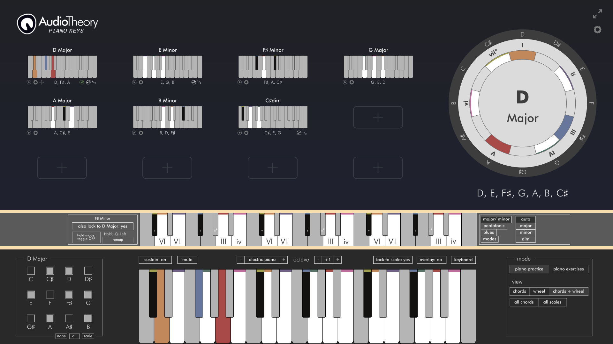

AudioTheory Piano Keys – User Guide

Getting Started
You can launch AudioTheory Piano Keys from the AudioTheory Piano Keys.exe executable file (Windows) or AudioTheory Piano Keys.app file (Mac OS). This loads up the main interface from where you can access the features detailed in this guide.
Getting Started
You can launch AudioTheory Piano Keys from the AudioTheory Piano Keys.exe executable file (Windows) or AudioTheory Piano Keys.app file (Mac OS). This loads up the main interface from where you can access the features detailed in this guide.
 Input
Input
The on-screen piano accepts input from any of the following sources:
MIDI – AudioTheory Piano Keys works best when you connect a MIDI device. This could either be an electric piano/ keyboard or MIDI controller. With this connected you will recieve highlighting and audio feedback in real time when playing.
You will need ensure the input octave on your device matches that of the application, if these are not aligned then you will find the highlighting is shifted to a different position on the on-screen piano. You can set the input octave in the application settings (opened using the cog in the top right of the interface). If you find yourself changing this setting frequently then there is also an option to add it to the on-screen piano toolbar for easy access.
Mouse – you can highlight/ play any key by clicking on it directly.
Keyboard – press the ‘keyboard’ button (it will highlight in pink when this mode is on) the application will register QWERTY input from your computer keyboard. In the settings there are two QWERTY keyboard overlay types that you can choose between labeled ‘partial’ and ‘full’. The partial keyboard overlay covers a single octave and is split across two rows of the keyboard. In 'full' mode, all the piano keys are sequentially mapped across the keyboard.
The on-screen piano has additional options to customise how the application handles playback, including a sustain feature and instrument selector. There are also options to display or hide the keyboard note overlay as well as a 'lock to scale' feature where only notes selected in the scale will give audio feedback.
You will also notice an octave selector, this specifically controls the playback (output) octave. It can be consigured independantly from the MIDI (input) octave so you can control how the application recieves audio in and how it plays it out seperatly.
As you play notes on the keyboard you will recieve visual and audio highlighting feedback as defined by your settings. This will display across both the on-screen piano and all loaded diagrams, giving you an overview of how what you're playing fits relative to scales and chords.
If you have any issues with MIDI input, there is an indicator in the settings which details exactly what input the application is recieving. This can be used to diagnose any issues you may encounter (e.g. if no notes were hlighlighting this could be used to asses if the input octave was out of range, or if the device was not properly connected to the computer).
 Scale
Scale
The note boxes in the bottom left of the screen can be used to exclude specific notes from the keyboard, as well as the chord and wheel diagrams. The 'scale' button provides preset options for using a standard piano scale.
 The 'all scales' can be used to access a fullscreen scale selector which lets you view sets of scale diagrams side by side and choose one to load.
The 'all scales' can be used to access a fullscreen scale selector which lets you view sets of scale diagrams side by side and choose one to load.
 Here you have a fullscreen view where you can play and choose between the scale presets.
Here you have a fullscreen view where you can play and choose between the scale presets.
When a scale preset has been selected, the note highlighting updates to be context dependant. For example, if C♯/ D♭ is to be presented as C♯ in the selected scale the highlight colour will be yellow (the colour used for C). But when it's to be displayed as D♭ it will highlight in orange (the colour for D).
You can also control this manually by pressing the note name directly. For example, if you want C♯ to display as D♭ then press the label here and the highlighting and names will adjust accordingly.